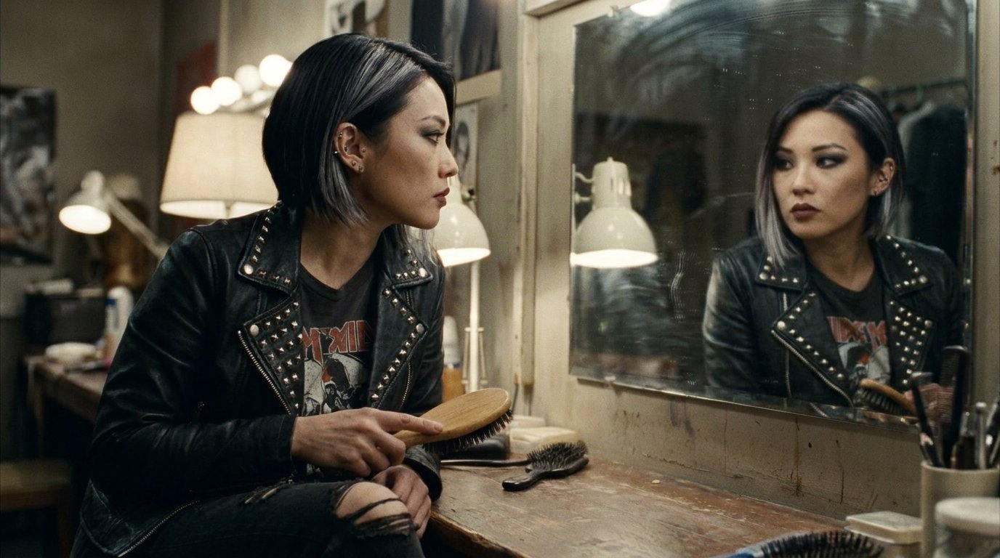
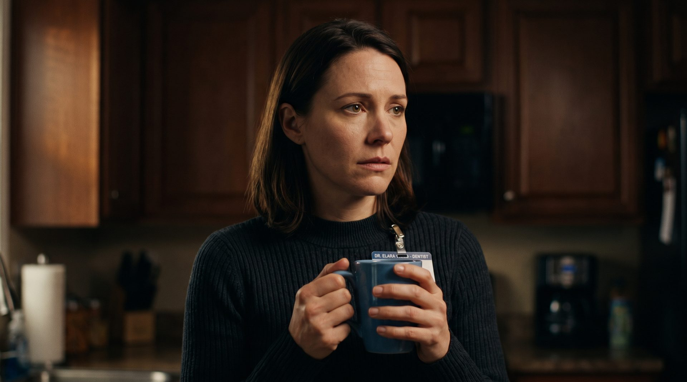
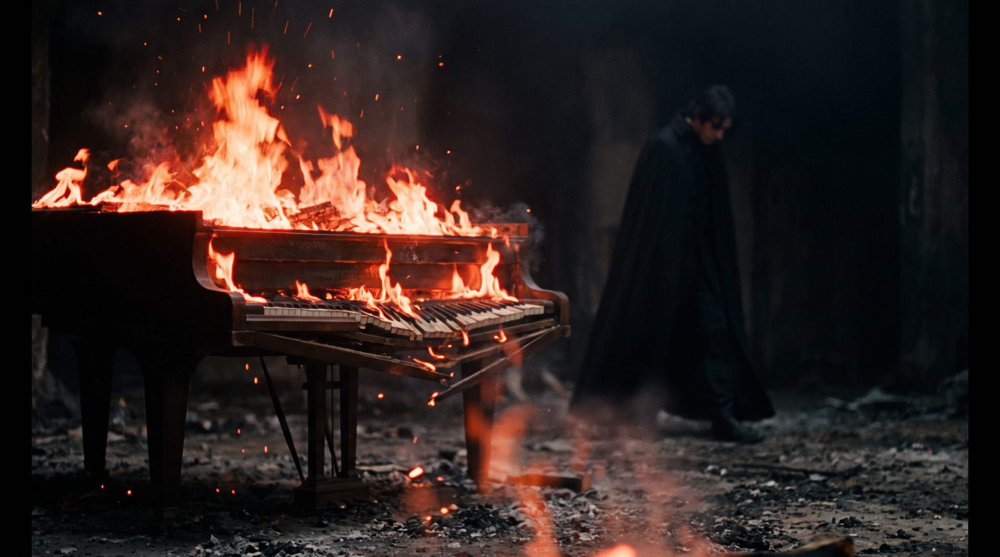
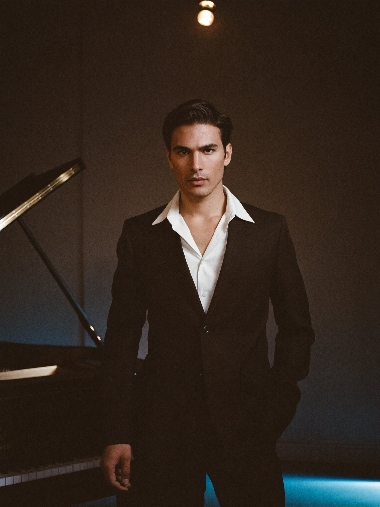
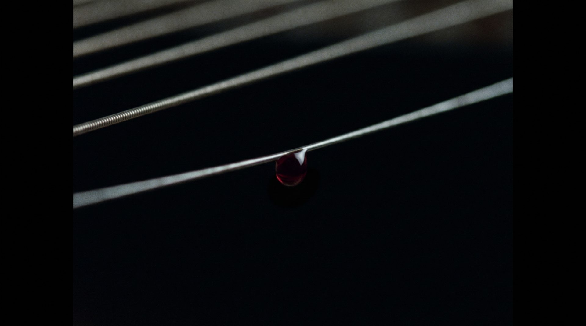
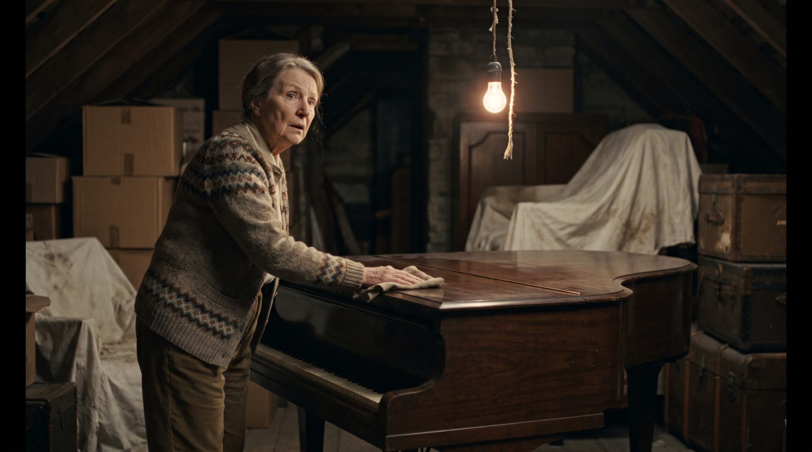

Written by Tyler Forrest — Feature Film Pitch
A washed-up, mediocre pianist inherits a haunted 1880s piano that instantly turns him into a musical genius — but as he rises to fame, the vengeful spirit of the instrument's original owner slowly consumes his mind, driving him to destroy everyone in his path before he can destroy the piano itself.
Henry Longbottom is a mediocre 39-year-old pianist stuck writing jingles and playing covers at a dead-end pub gig, resentful that talent never came easy to him. When his wife's aunt offers him a dusty antique baby grand, he doesn't realize it once belonged to Theodore Chambers — a 19th-century prodigy who shot himself at its keys after losing his gift and his spotlight to a younger star.
A mysterious fall at the keys leaves Henry with perfect pitch and virtuoso technique he never had — and a hunger for fame he can no longer control. The transformation comes with migraines, blackouts, and hallucinations of himself with a bullet in his head.
As Henry's cruelty alienates his wife Victoria and a new flame, Miranda, a younger prodigy is brought in to replace him — and his obsession curdles into stalking, assault, and an attempted on-stage murder, mirroring the exact crime Theo committed a century before.
Miranda uncovers Theo's history and destroys the piano to save Henry's life; he finishes the job by setting it on fire, expelling the spirit. Arrested and institutionalized, Henry emerges three months later humbled — until a piece of the piano turns up again in a junkyard.
Henry inherits the haunted 1880s piano no one else wanted.
A fall at the keys leaves him a musical genius overnight.
A Grand Symphony residency launches him to stardom.
A rival replaces Henry; Theo's spirit demands blood.
Henry holds a gun on stage — the piano is destroyed.
Institutionalized and humbled, Henry chooses his old life back.
Supernatural psychological thriller — a possession story where the real monster is ambition itself.
Dark and character-driven, wry in its opening act, tightening into dread as the possession takes hold.
Whiplash meets The Shining, with the body-horror-of-ambition of Black Swan.
A late-30s jingle composer and failed pub musician whose insecurity is his whole identity. Possession turns that insecurity into arrogance and violence — before humbling him back to who he really is.
An 1880s piano prodigy destroyed by his own replacement and dead by his own hand. A perfectionist repeating his exact crimes a century later — through Henry's body.

Henry's wife, a dentist. Grounded and supportive until Henry's transformation frightens her away — and pulls her back once he's exorcised.

A hairstylist and singer-songwriter; Henry's affair, his moral conscience, and ultimately his savior.

Grand Symphony producer who "discovers" Henry, then coldly discards him for someone newer.

The younger, flashier prodigy who replaces Henry — and nearly pays for it with his life.

The elderly piano tuner who first senses the instrument is haunted.

Henry's aunt; gifts him the piano and helps him trace its deadly history.
Talent that isn't earned always costs something.
Henry's insecurity literally possesses him.
Obsession and mental strain run through every generation of players.
Henry repeats Theo's exact crimes without realizing it.
The ending rejects the "genius" fantasy entirely.
Under a dozen speaking roles carry the entire story.
A home, a pub, a studio, and one concert venue.
The piano itself carries the horror — no heavy VFX budget required.
Elevated horror with awards-conscious character work — A24 / Blumhouse-adjacent.
Thank you for reading.